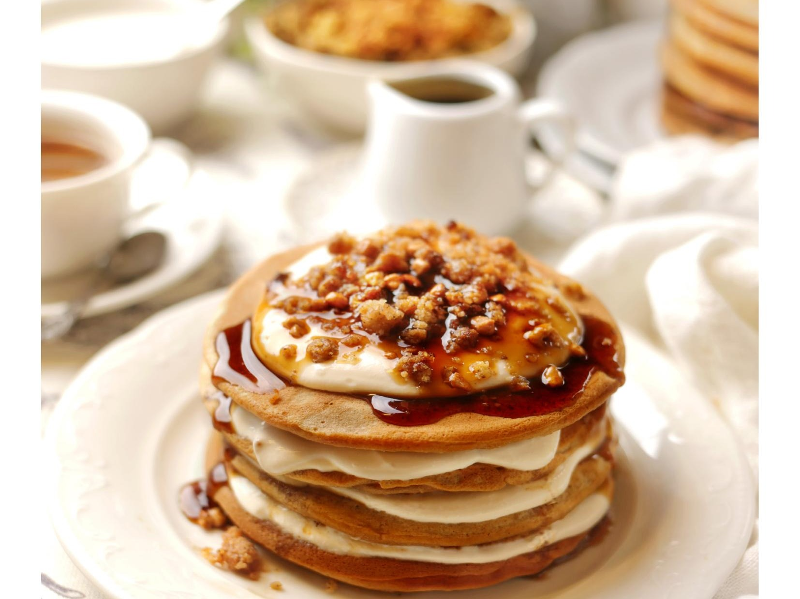

на 12-14 панкейков
Рецепт-раскладушка: можно приготовить панкейки без всяких излишеств, а можно создать настоящий шедевр для праздничного завтрака, с кремом, кофейным сиропом и ореховой крошкой штрейзелем. В тесто для более насыщенного кофейного аромата можно добавить 1 ч. л. растворимого кофе.
Сироп и штрейзель можно приготовить заранее, это быстро. Вместо штрейзеля можно взять гранолу, только добавить в нее немного дробленых зерен кофе. Сироп можно приготовить с готовым эспрессо или с растворимым кофе – это даже лучше, потому что у него меньше меняется аромат при длительном нагреве. А ложка коньяка, рома или виски в сиропе добавит аромата – и не беспокойтесь, почти весь алкоголь успеет выпариться при варке.
для сиропа:
для штрейзеля:
для панкейков:
для крема: